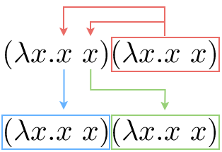
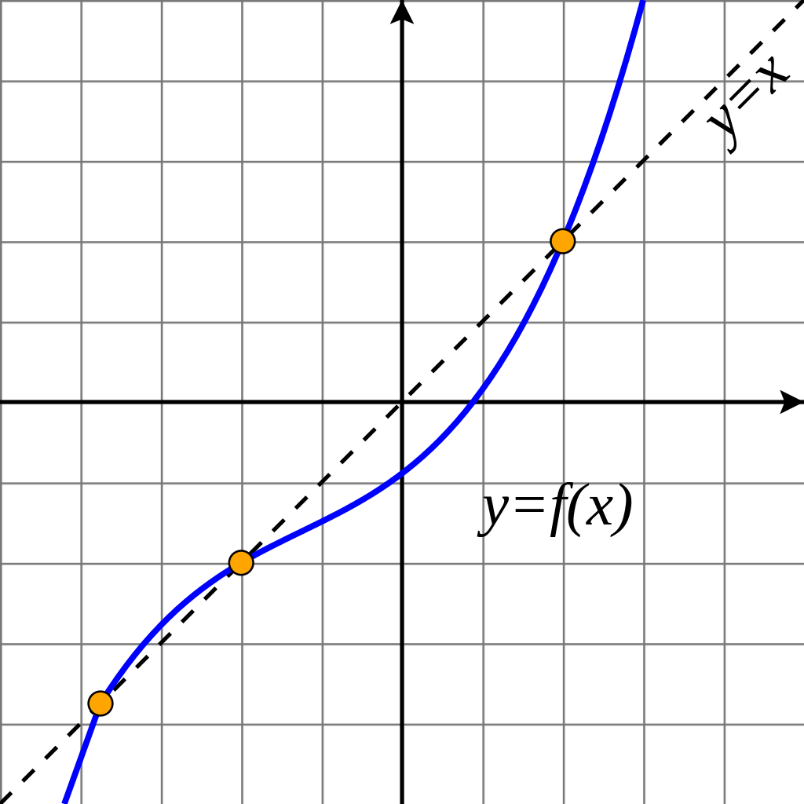

Understanding the Y combinator
Table of Contents
1. Quick introduction to lambda calculus
Lambda calculus (λ-calculus) is a mathematical system for computation based on function abstraction and application, using variable binding and substitution.1
1.1. Rules
The beauty of lambda calculus is its simplicity. These are the only 3 rules:
- \(x\): A variable represents a parameter.
- \((\lambda x. M)\): A lambda abstraction is an anonymous function, with a parameter \(x\) (between the λ and the dot), that returns the body \(M\).
- \((M\ N)\): An application of function \(M\) to an argument \(N\).
In the last rule, both \(M\) and \(N\) are lambda terms.
1.2. Lambda terms
A lambda term is just a valid expression in the lambda calculus system. Well, what makes an expression valid? The following 3 rules are used to determine if a lambda expression is valid:
- A variable \(x\) is itself a valid lambda term.
- If \(M\) is a lambda term, and \(x\) is a variable, then \((\lambda x. M)\) is also a lambda term (An abstraction).
- If \(M\) and \(N\) are lambda terms, then \((M\ N)\) is also a lambda term (An application).
You can begin to feel the recursive magic of lambda calculus, before even getting into an example.
1.3. Reduction operations
Lambda calculus also has 2 main reduction operations:
- \((\lambda x. M[x])\) → \((\lambda y. M[y])\): Alpha conversion (α-conversion), renaming the bound variables in the expression. Used to avoid name collisions.
- \(((\lambda x. M) N)\) → \((M[x := N])\): Beta reduction (β-reduction), replacing the bound variables (\(x\)) with the argument expression (\(N\)) in the body (\(M\)) of the abstraction.
There is also eta reduction (η-reduction), which expresses the idea of extensionality,2 which applied to this context establishes that two functions are the same if and only if they give the same result for all arguments.
1.4. Notation
For understanding lambda notation, you will also have to keep in mind these conventions:
- Outermost parentheses are dropped: \(M N\) instead of \((M N)\).
- Applications are assumed to be left associative: \(M N P\) instead of \(((M N) P)\).
- The body of an abstraction extends as far right as possible: \((\lambda x. M N)\) means \((\lambda x. (M N))\) and not \(((\lambda x. M) N)\).
- A sequence of abstractions is contracted: \((\lambda x. \lambda y. \lambda z. N)\) is abbreviated as \((\lambda x\ y\ z. N)\).
- When all variables are single-letter, the space in applications may be omitted: \((M N P)\) instead of \((M\ N\ P)\).
Some of these look a bit confusing to me, specially when embedding expressions in text, so I will try to make each expression as readable as possible.
2. SICP, Lisp and JavaScript
Structure and Interpretation of Computer Programs is an amazing book by Harold Abelson and Gerald Jay Sussman. The book teaches the fundamental principles of computer programming, including recursion, abstraction, modularity, and much more. I recommend the book to anyone who is interested in programming, I am sure they will learn something.
This book has two editions. The first one uses Scheme (a dialect of Lisp), for its examples and explanations, while the second uses JavaScript. I have not programmed much in JavaScript at the time of writing this, but I will try to provide all examples in both lambda notation, Scheme and JavaScript.
At one point, in section 1.3.3, they talk about finding fixed points of functions. This was the first time I heard about this, and it's what mainly motivated me to write this article. If you are interested on the general Lisp approach, and not on the Y combinator itself, I recommend you check it out.
One of the most valuable things that SICP has taught me is that sometimes it's extremely useful to treat functions as black boxes that are able to transform some inputs into some outputs. This has been useful not only when using functions, but also when designing them.
3. Simple example: Factorial
This is the function for calculating the factorial of a number \(n\), using the lambda calculus notation:
\[ \text{fact} = \lambda n. \Big(\Big(\text{iszero}\ n\Big) 1 \Big(\text{mult}\ n \ \big(\text{fact}\ (\text{prec}\ n)\big)\Big)\Big) \]
In Scheme:
(define fact (lambda (n) (if (equal? n 0) 1 (mult n (fact (prec n))))))
Or in JavaScript:
var fact = (n) => (n == 0) ? 1 : mult(n, (fact(prec(n))));
We are defining fact as a function that takes a parameter n. This function
returns 1 if n is zero, and otherwise multiplies n by the factorial of the
number preceding n.
In this case, we can simply ignore how iszero, mult, prec and even fact work
internally, we just have to trust that they do what we expect. Another useful
way of thinking about lambda calculus and Lisp in general is as a language for
expressing processes.
In any case, we don't have those name-defining commodities in lambda calculus. A function can't call itself by name, so we will have to find an alternative way.
4. Simple recursion with anonymous functions
Before trying to understand the Y combinator, let's have a look at an example of how an anonymous function might call itself without the need for symbols.
\[ (\lambda x. x\ x)(\lambda x. x\ x) \]
Or in Scheme:
((lambda (x) (x x)) (lambda (x) (x x)))
Note: Depending on the Lisp, you might need to use
(funcall x x)instead of(x x), since variables and functions don't share the same namespace. You can search about the differences between Lisp-1 and Lisp-2.
Or in JavaScript:
((x) => x(x))((x) => x(x))
We can see that the two parenthesized expressions are identical, and that the first is applied to the second one. Let's try to simplify it by β-reduction. The first parenthesized expression, is applied to the second one. We replace each occurrence of \(x\) in the body of the first expression with the whole second parenthesized expression.

We are right back where we started. This function would call itself indefinitely, and a similar form will be used for the Y combinator bellow.
5. Fixed points
Before getting into the fixed-point combinators, we need to define what a fixed point is.
A fixed point of function \(f\) is a value that is mapped to itself by the function.3 In other words, \(x\) is a fixed point of \(f\) if \(f(x) = x\). For this to be possible, \(x\) has to belong to both the domain of \(f\) (set of values that it can take), and the codomain of \(f\) (set of values that it can return).
For example, if \(f(x) = x!\), 1 and 2 are fixed points, since \(f(1) = 1\) and \(f(2) = 2\).

The image shows the graph of a function \(f\), with 3 fixed points. When plotting with \(y = f(x)\), these 3 points were also on the line \(x = y\).
For example, for some functions \(f\), we can locate a fixed point by beginning with an initial guess and applying \(f\) repeatedly.
\[ f(x),\quad f(f(x)),\quad f(f(f(x))),\quad ..., \]
We would do that until the value doesn't change very much, and we are satisfied with the result.
6. Fixed-point combinators
A fixed-point combinator is a higher-order function (i.e. a function that takes a function as argument) that returns some fixed point of its argument function.4
So, if a function fix is a fixed-point combinator, a function f has one or
more fixed points, then fix(f) is one of these fixed points:
\[ f(\text{fix}\ f) = \text{fix}\ f \]
In lambda calculus, every function has a fixed point.
7. Y combinator
An example of a fixed-point combinator is the Y combinator. This is the definition of \(Y\).
\[ Y = \lambda f. \big(\lambda x. f (x\ x)\big) \big(\lambda x. f (x\ x)\big) \]
Or in Scheme:
(define Y (lambda (f) ((lambda (x) (f (x x))) (lambda (x) (f (x x))))))
Or in JavaScript:
var Y = (f) => ((x) => f(x(x)))((x) => f(x(x)));
Since it's a fixed-point combinator, calling \(Y\) with a function as its argument would be reduced to \(Y\ f = f(Y\ f)\). This is a very interesting and useful concept, and it's where this image comes from.
Let's try to understand what it does, and why it's a fixed-point combinator. We are saying that \(Y\) is a function that takes one parameter \(f\). The body consists of the same lambda term applied to itself: \((\lambda x. f(x\ x))\). You may realize why we explained how to do recursion with anonymous functions earlier. A similar principle applies here, but we are also calling the \(f\) function.
Let's simplify it with β-reduction step by step:
\begin{align*} Y\ g &= \lambda f. \big(\lambda x. f (x\ x)\big) \big(\lambda x. f (x\ x)\big) g && \text{By definition of } Y \\ &= \big(\lambda x. g (x\ x)\big) \big(\lambda x. g (x\ x)\big) && \text{By beta reduction: Replacing } f \text{ of } Y \text{ with } g \\ &= g \Big(\big(\lambda x. g (x\ x)\big) \big(\lambda x. g (x\ x)\big)\Big) && \text{By beta reduction: Replacing } x \text{ of the first function with } \big(\lambda x. g (x\ x)\big) \\ &= g (Y\ g) && \text{By equality} \end{align*}Note how the reduction on the third step is applying \(g\) to the same expression in the second step, which we know is equal to \(Y\ g\). That's how we can verify that \(Y\ g = g(Y\ g)\).
An alternative (and slightly simpler) version of the Y combinator is the following:
\[ X = \lambda f. (\lambda x. x\ x) (\lambda x. f(x\ x)) \]
Notice how the first call to \(f\) was not necessary, since this expression also β-evaluates to the Y combinator.
Footnotes:
See the Wikipedia page for lambda calculus.
See the Wikipedia page for extensionality.
See the Wikipedia page for fixed point.
See the Wikipedia page for fixed-point combinator.